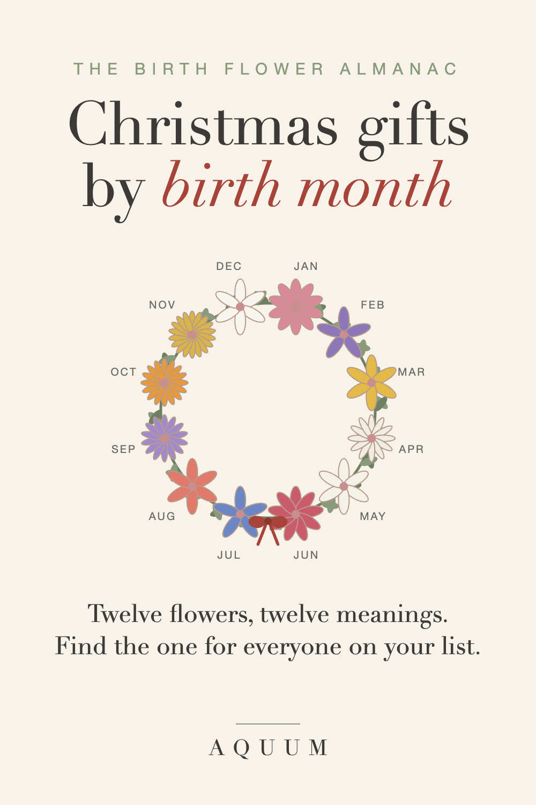

Birth Flower Christmas Gifts: A Personal Present for Everyone on Your List
2026-09-30
This article may contain affiliate links. How that works.

The hardest Christmas gifts are the ones for people you love but can't read: the mom who says she needs nothing, the friend with perfect taste, the teacher you barely know. A birth flower solves most of them. You only need one fact, their birth month, and the gift arrives with a meaning they've probably never heard.
Why a birth flower works at Christmas
- It's personal without being risky. No sizes to guess in jewelry, no taste to second-guess in decor. The meaning does the work.
- It stands out under the tree. Among candles and gift cards, a present that says "this is your flower" is the one that gets explained to the rest of the family.
- It scales to any budget. A card, a mug, a tote or a soft shirt can all carry the same flower and the same story.
Who to give it to, and which flower to look for
Mom and grandma
Look up her birth month and read her the meaning when she opens it. For a January mom, the carnation means love that doesn't give up, and carnations were the original Mother's Day flower. For a grandmother, a family set with her flower and her grandchildren's months is the gift that gets framed. More ideas in birth flower gifts for mom. Shopping for your partner's mom? See gifts for your mother-in-law.
Your partner
The rose (June) is the obvious romantic flower, but the less expected ones land harder: the violet (February) means quiet loyalty, and the lily of the valley (May) means happiness returning. Pair the gift with a note about why that meaning fits the two of you.
A sister or best friend
The larkspur (July) means an open heart and a strong bond. The chrysanthemum (November) means honest friendship. Both make a gift that says what friends rarely say out loud.
Teachers
A small, useful gift with the teacher's own flower beats another candle. The aster (September) stands for wisdom and patience, which is exactly the job. See birth flower gifts for teachers.
Nurses and caregivers
The gladiolus (August) means strength of character, the right thank-you for the people who worked through the holidays. A mug for the break room or a tote for the long shift gets used every day.
Someone who is grieving
The first Christmas after a loss is hard. The marigold (October) is a flower of remembrance: choose the flower of the person they lost, and the gift says "I remember too" without needing words.
A December birthday
People born in December often get one gift "for both." Make it a real birthday gift with their own flower, the paperwhite, which means good wishes for what's ahead. More in December birthday gift ideas.
When to order
Printed and made-to-order gifts take a few days to make and about a week to ship in the US. Order by mid-December for delivery before Christmas, and earlier if you're shipping across the country or abroad. If you're late, a printed card with the flower's meaning, and the gift to follow, still counts.
Every flower, month by month
Not sure which flower belongs to whom? The complete month-by-month guide has all twelve, with their meanings and the best gift for each.
Shopping for a woman in particular? See meaningful Christmas gifts for her and gifts for the woman who has everything.